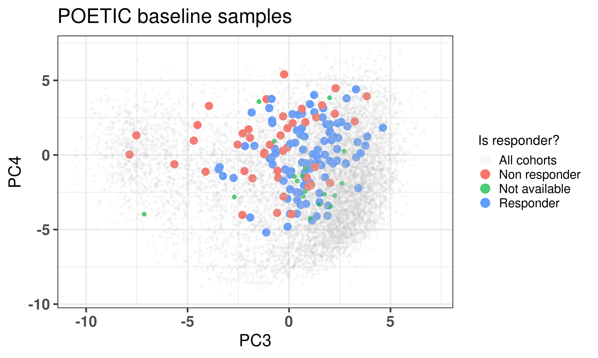

This chapter we present a new way to think about the personalized medicine, by incorporating patient molecular information and its context. We saw previously that by using different cohorts, we can embed new patients into a point cloud. The idea is that the neighborhood of the patients are similar in the molecular level, and we can draw conclusions based on this.
Each patient can be assigned a score. Scores represent a biological pathway, or in other words, a biological activity. Given a biological process, there is usually a set of genes that represent it. We can then use these set of genes to calculate scores that are proxies of this biological activity.
For example, in the previous chapters we used the ER signaling scores to motivate the continuity of ER signaling. This is not restricted to this specific pathway, we could have used any other list of genes representing a process.
By combining a score and the neighborhood of a patient, we can make direct comparisons and questions. Given a patient, how different is its score for a pathway compared to its neighbors? Is there also an alternative pathway that could be target and has a higher signaling? In this case specifically, is ER signaling more or less expressed compared to its neighbors?
The POETIC trial (Gao et al. 2019) is a breast cancer trial that had as hypothesis neoadjuvant therapy could improve overall and recurrence free survival. They gave aromatase inhibitors (AIs) for ER+ BC patients for 2 weeks prior to surgery and then 2 weeks after surgery. Moreover, they collected a needle biopsy before the treatment started and a biopsy in the surgery. They also measured the Ki67 levels, therefore we have a proxy on how well these patients responded in the short term to AIs. Also, they sent the tissues for sequencing, so microarray data is available. This is a unique cohort, in the sense that we can understand what are the responders or not, in terms of Ki67 levels, and use the molecular data to try to understand the responsiveness. The definition of responders are those patients that have a reduction of at least 60% in Ki67 levels when comparing pre-treatment versus surgery.
Here we use this cohort to draw conclusions on responders and non responders and how the molecular landscape can be used. We show that some patients that are close to each other in the molecular landscape can have different pathway scores and therefore have different responses.
* The library is already synchronized with the lockfile.
4.1 Calculating scores in neighborhoods
Patients close to each other in the molecular landscape are somewhat molecularly close, due to how the embedding works. Therefore, we can look at patients in a neighborhood and calculate the average scores, to see what it means to be in a specific neighborhood.
To do this, we define a radius for a patient where all the patients within the euclidean ball with this radius will be selected and an average score distribution is calculated.
To calculate the average score distribution we use the rstanarm package. We set the prior distribution for the intercept to be a normal distribution centered at 0 with standard deviation of 1. All scores are in a range of -1 to 1, so this is a relatively flat prior for our use case.
The video below shows how scores change in average when comparing different neighborhoods.
Going from right to left it shows how ER signaling is decreased. From top to bottom there is a reduction of proliferation, E2F targets, and a change in EMT and TGFb signaling. These are representative scores, other pathways could be used as well.
4.2 POETIC embedding
In this section we show the embedding of the POETIC trial samples. But first we analyse some basic properties of the dataset. The data for this dataset was downloaded and processed as described at chronchi.github.io/transcriptomics in the chapter AI - GSE105777.
4.2.1 Number of samples
In this dataset there are matched samples from patients that are treated and untreated. Table 4.1
Table 4.1: Table showing the number of samples for treated and untreated patients
group
n
percent
treated
157
74
untreated
56
26
In this cohort, there is the PAM50 molecular subtype available for the untreated. Table 4.2 shows the number of patients for each subtype.
Table 4.2: Table showing the number of molecular subtypes for each group.
pam50
n
percent
her2
1
0.235
luma
77
18.075
lumb
31
7.277
normal
3
0.704
not_available
314
73.709
The numbers differ from previously, since the molecular subtype is calculated for each sample, so two molecular subtypes for each patient.
4.2.2 Proportion of top loadings
There are in total 1008 genes available out of the . Among them, 39 are the housekeeping genes. Out of the 36 genes missing, a total number of 8 are missing from the top 200 PC3 loadings, a proportion of 4%. A total number of 5 are missing from the top 200 PC4 loadings, a proportion of 2%. These are very small proportions, and we have seen from the last chapter that they will not affect the position of the patients in the embedding.
4.2.3 Embedding
Figure 4.1 shows a good mixing of the POETIC sample and how all the patients are scattered across the whole landscape. Here all samples are plotted, meaning that every two dots correspond to a single patient.
Figure 4.1: PCA embedding of all samples from TCGA, SCANB and METABRIC including the POETIC samples on top. (A) Colored by cohort, (B) colored by ER status, (C) colored by PAM50 molecular subtype.
Figure 4.2 shows the embedding of baseline samples from patients that received endocrine therapy prior to surgery. Patients on the left part of the molecular landscape are considered to be non responders, this coincides with the fact this region corresponds to the ER- BC patients.

Figure 4.2: PCA embedding of all samples from TCGA, SCANB and METABRIC including the POETIC samples on top. POETIC samples correspond to only baseline treated patients.
And when checking the first two components, the POETIC data is closer to METABRIC, which makes sense since both are microarrays, as it can be seen in Figure 4.3.
Figure 4.3: Biplot of first two PCA components from POETIC, TCGA, SCANB and METABRIC. POETIC is highlighted in the plot and has a bigger point.
4.3 Scoring all samples
In the last chapters scores were showed for TCGA, SCANB and METABRIC. Figure 2.18 shows how ER signaling changes as patients move across the molecular landscape. We intend to use the scores now for the POETIC samples. We first start by calculating using GSVA as well and include in the dataframe with the other cohorts. Before moving to the next chapter, we will analyse and compare the scores across the responders and non responders.
Figure 4.4 shows that when using the scores, it looks like in average at baseline \(SET_{ER/PR}\) is lower in non responders than in responders. For the other scores there is no clear difference.
Figure 4.4: Baseline scores for all treated patients in the POETIC trial. G2M corresponds to a proliferation score, EMT to epithelial to mesenchymal transition score and the others are related to ER signaling.
4.4 Analysing patient neighborhoods
There are two ways to interpret the embedding. If the patient has ER+ BC and its embedding is close to the ER- BC patients, we can infer that the endocrine response might not work so well, as it was shown in Figure 4.2. The other option is to compare the patient’s score to the average score of its neighborhood.
What is a neighborhood? When performing the embedding, global structures are not preserved usually. In this sense we only compare patients that are close to each other in an euclidean neighborhood, i.e., we calculate a radius around each sample and see what other samples are within this ball given the euclidean distance.
Given a neighborhood, one can calculate the posterior average score of all samples from METABRIC, SCANB and TCGA and use that as an indication of average score that we can compare other patients to. The concept is that if an ER+ BC patient has a much lower ER signaling score, it means the patients will not respond so well to endocrine therapy, as they are very different from their neighboors.
To showcase the ability to use the scores and infer results, we use the POETIC trial patients to compare the scores. This cohort is special in the sense that the patients are filtered based on selection criterias, meaning that the patients are clinically similar.
Two random patients in very close neighborhoods were selected to showcase the ability of the molecular landscape. The id of the patients are 63 and 236. Table 4.3 shows the clinical features of these patients. One of them is HER2+. Patient 63 had a higher Ki67 baseline level but a very good response to endocrine therapy. Patient 236 did not respond to endocrine therapy in terms of reduction of Ki67 levels.
Table 4.3: Clinical features from patients 63 and 236.
patient_nb
er_status
her2_status
ki67
change_ki67
ccca_surgery_ki67_2_7
63
pos
Positive
16.60702
-69.958509
noCCCA
236
pos
Negative
11.30906
5.593711
noCCCA
Figure 4.5 shows the embedding of two distinct patients in a similar neighborhood.
Figure 4.5: Plot of two selected patients in the molecular landscape. One is a responder and the other is a non responder. The patient id numbers are 63 and 236.
And now we calculate the average scores for each patient neighborhoods. We start by defining a radius value. After that we select the patients in the neighborhood and use rstanarm to get the posterior distribution of the average score in the neighborhood. For this we use the function stan_glm to calculate the average. This is effective because it can be paired with the package tidybayes for plotting. It makes extremely easy to deal with posterior data. For the average we use a normal prior centered at 0 with 1 standard deviation, since all scores are between -1 and 1.
Patient 63 Figure 4.6 is considered a responder. According to the scores, when comparing the estrogen early signature to its average distribution in the neighborhood, the score is higher.
Figure 4.6: Posterior distribution of the average scores in the neighborhood of patient 236 from POETIC trial. Each dot corresponds to a 1% quantile.
Patient 236 Figure 4.7 was considered a non responder. According to the scores, when comparing the estrogen early signature to its average distribution in the neighborhood, the score is lower, being in the 5% quantile.
Figure 4.7: Posterior distribution of the average scores in the neighborhood of patient 236 from POETIC trial. Each dot corresponds to a 1% quantile.
When comparing these two patients, there is also a difference in the androgen response score, which could be a reflection of different estrogen signaling.
Gao, Qiong, and Elena López-Knowles, Maggie Chon U. Cheang, James Morden, Ricardo Ribas, Kally Sidhu, David Evans, et al. 2019. “Impact of Aromatase Inhibitor Treatment on Global Gene Expression and Its Association with Antiproliferative Response in ER\(\mathplus\) Breast Cancer in Postmenopausal Patients.”Breast Cancer Research 22 (1). https://doi.org/10.1186/s13058-019-1223-z.
Source Code
# Pathway activity in a personalized contextThis chapter we present a new way to think about the personalized medicine,by incorporating patient molecular information and its context. We saw previously that by using different cohorts, we can embed new patientsinto a point cloud. The idea is that the neighborhood of the patients are similar in the molecular level, and we can draw conclusions based onthis. Each patient can be assigned a score. Scores represent a biologicalpathway, or in other words, a biological activity. Given a biologicalprocess, there is usually a set of genes that represent it. Wecan then use these set of genes to calculate scores that are proxies of this biological activity.For example, in the previous chapters we used the ER signalingscores to motivate the continuity of ER signaling. This is notrestricted to this specific pathway, we could have used anyother list of genes representing a process. By combining a score and the neighborhood of a patient, we can make direct comparisons and questions. Given a patient,how different is its score for a pathway compared to itsneighbors? Is there also an alternative pathway that couldbe target and has a higher signaling? In this case specifically, is ER signaling more or less expressed comparedto its neighbors? The POETIC trial [@Gao2019]is a breast cancer trial that had as hypothesisneoadjuvant therapy could improve overall and recurrence freesurvival. They gave aromatase inhibitors (AIs) for ER+ BC patientsfor 2 weeks prior to surgery and then 2 weeks after surgery.Moreover, they collected a needle biopsy before thetreatment started and a biopsy in the surgery. Theyalso measured the Ki67 levels, therefore we have a proxyon how well these patients responded in the short term to AIs. Also, they sent the tissues for sequencing, so microarray data is available. This is a unique cohort, in the sense that we can understand what are theresponders or not, in terms of Ki67 levels, and usethe molecular data to try to understand the responsiveness. The definition of responders are those patients that have a reduction of at least 60\%in Ki67 levels when comparing pre-treatment versus surgery. Here we use this cohort to draw conclusions on respondersand non responders and how the molecular landscape can be used. We show that some patients that are close to eachother in the molecular landscape can have differentpathway scores and therefore have different responses.```{r setup}renv::restore()library(tidyverse)library(ggplot2)library(PCAtools)library(tidybayes)library(GSVA)library(SummarizedExperiment)library(rstanarm)source("utils.R")source("first_run.R")# Here we are using rds files from previous chapters, so we source# in any case the load_rds_files.R and exclude all the associated files# that are generated in this current chapterif (first_run){ load_at_setup <-FALSE} else { load_at_setup <-TRUE}name_document <-"scoring"source("load_rds_files.R")# by setting the dev to png and pdf, this saves the figures in a specific# folder in both formats. moreover, since png is coming first, it shows# this figure when rendering the html. What is nice about this is that it# inherits the properties from the chunk to save the figure, so no need# to use ggplot2::ggsave to save the plots. this also works knitr::opts_chunk$set(dev =c('png', 'pdf', 'svg'))options(bitmapType ='cairo')```## Calculating scores in neighborhoodsPatients close to each other in the molecular landscape are somewhatmolecularly close, due to how the embedding works. Therefore, we can look at patients in a neighborhood and calculate the average scores,to see what it means to be in a specific neighborhood. To do this, we define a radius for a patient where all the patientswithin the euclidean ball with this radius will be selected and an average score distribution is calculated.To calculate the average score distribution we use the `rstanarm` package. We set the prior distribution for the intercept to be a normal distributioncentered at 0 with standard deviation of 1. All scores are in a range of-1 to 1, so this is a relatively flat prior for our use case.The video below shows how scores change in average when comparing differentneighborhoods. ```{r, eval = first_run}scores_to_use <-c("Estrogen response early","E2F targets","P53 pathway","EMT","Androgen response","TGFb signaling","SET ER/PR") %>%`names<-`(c("HALLMARK_ESTROGEN_RESPONSE_EARLY","HALLMARK_E2F_TARGETS","HALLMARK_P53_PATHWAY","HALLMARK_EPITHELIAL_MESENCHYMAL_TRANSITION","HALLMARK_ANDROGEN_RESPONSE","HALLMARK_TGF_BETA_SIGNALING","SET_ERPR"))df_pca <- df_pca %>% dplyr::filter( pam50 %in%c("normal", "luma", "lumb", "basal", "her2") ) %>%`rownames<-`(.[, "sample_name"])# we first get random samples from the path determined belowpc3_values <-2.5+rnorm(0, 0.1, n =20)pc4_values <-seq(from =-4, to =4, length.out =20)pca_values <-data.frame(PC3 = pc3_values, PC4 = pc4_values) %>% as.matrixsamples_top_down <-apply(pca_values, 1, get_closest_sample, df_pca = df_pca)pc3_values <-seq(from =-8.5, to =1, length.out =20)pc4_values <-rnorm(1, 0.1, n =20)pca_values <-data.frame(PC3 = pc3_values, PC4 = pc4_values) %>% as.matrixsamples_left_right <-apply(pca_values, 1, get_closest_sample, df_pca = df_pca)all_samples <-list(top_down = samples_top_down,left_right =rev(samples_left_right))pca_values <-lapply( all_samples, function(x, df_pca){ df_pca %>% dplyr::select(PC3, PC4) %>% as.matrix %>% .[x, ] },df_pca = df_pca) scores_for_movie <-mapply(function( pca_value, which_direction, df_pca, scores_to_use, radius, base_size ){sapply(rownames(pca_value), get_patient_scores_distributions,df_pca = df_pca,scores_to_use = scores_to_use,which_direction = which_direction,radius = radius,USE.NAMES =TRUE, simplify =FALSE ) },pca_value = pca_values,which_direction =names(pca_values),MoreArgs =list(df_pca = df_pca, scores_to_use = scores_to_use,radius =1 ),SIMPLIFY =FALSE,USE.NAMES =TRUE)plots_scores_for_movie <-mapply(function( avg_rstan_samples, which_direction, ... ){sapply( avg_rstan_samples, get_plot_patient_distribution,which_direction = which_direction, ...,USE.NAMES =TRUE, simplify =FALSE ) },avg_rstan_samples = scores_for_movie,which_direction =names(scores_for_movie),MoreArgs =list(scores_to_use = scores_to_use,base_size =15,size_dots =3 ),SIMPLIFY =FALSE,USE.NAMES =TRUE)plots_molecular_landscape <-plot_selected_samples( df_pca, pca_values,scores_plots_movie = plots_scores_for_movie,size_line =0.5,radius =1,size_points =3,title_plot ="Molecular landscape")plots_estimates_tog <-mapply(function(plot1, plot2){ cowplot::plot_grid(plot1, plot2, nrow=2) },plot1 = plots_scores_for_movie$top_down,plot2 = plots_scores_for_movie$left_right,USE.NAMES =FALSE,SIMPLIFY =FALSE)final_plots <-lapply(1:length(plots_estimates_tog),function(i) { cowplot::plot_grid( plots_molecular_landscape[[i]], plots_estimates_tog[[i]], ncol =2, rel_widths =c(1.8, 1) ) })folder_to_save <-"../results/plots/scoring/movie"dir.create( folder_to_save, showWarnings =FALSE, recursive =TRUE)fig_width <-22fig_height <-10sapply(1:length(final_plots),function(i, final_plots){ ggplot2::ggsave(filename =paste0( folder_to_save, "/", ifelse(i <10, paste0("0",i), i), ".png" ),plot = final_plots[[i]],width = fig_width,height = fig_height, dpi =320 ) },final_plots = final_plots)# the original command used in the command line is the one below:# ffmpeg -y -framerate 2 -pattern_type glob -i 'movie/*.png' mol_land.mp4# we can then call it directly from R instead of having to do it manually# after rendering the documentsystem(paste0("ffmpeg -y -framerate 2 -pattern_type glob -i '", folder_to_save, "/*.png' ", folder_to_save, "/../mol_land.mp4" ))``````{r, eval = !first_run, results = 'asis', echo = FALSE}embedding_video <-paste0('<iframe width="720" height="480" ','src="../plots/scoring/mol_land.mp4" align="middle"','frameborder="0" allowfullscreen></iframe>')cat(embedding_video)```Going from right to left it shows how ER signaling is decreased. From top tobottom there is a reduction of proliferation, E2F targets, and a change inEMT and TGFb signaling. These are representative scores, other pathways couldbe used as well. ## POETIC embeddingIn this section we show the embedding of the POETIC trial samples.But first we analyse some basic properties of the dataset.The data for this dataset was downloaded and processedas described at [chronchi.github.io/transcriptomics](https://chronchi.github.io/transcriptomics/)in the chapter AI - GSE105777. ```{r, eval = first_run}datasets <-readRDS("../results/rds_files/surv_analysis_estrogen/datasets_with_scores.rds")poetic <-readRDS("../data/poetic.rds")df_pca_coordinates <-readRDS("../results/rds_files/pca_merging/df_pca_coordinates.rds")datasets$poetic <- poeticsaveRDS( datasets,"../results/rds_files/scoring/datasets_with_poetic.rds")# get the normalization performed poetic_normalized <-get_final_ranking_values(sum_exp = poetic,assay_to_use ="normalized_intensity",stable_genes = stable_genes,most_variable_genes =setdiff(rownames(pca_fit$loadings), stable_genes))# calculate the embeddingpoetic_df_pca <-get_pca_coordinates(poetic_normalized, pca_fit) %>% data.frame %>% dplyr::bind_cols( ., colData(poetic_normalized) %>% data.frame %>% dplyr::mutate(er_status =ifelse( er_status =="Positive", "pos", "neg" ) ) %>% dplyr::mutate(cohort ="poetic") %>% dplyr::rename(is_responder = r_or_no_r_change_ki67_60_and_baseline_ki67_5_percent ) %>% dplyr::mutate(sample_name =colnames(poetic_normalized) ) ) %>% dplyr::bind_rows(., df_pca_coordinates)# save all the resultssaveRDS( poetic_df_pca %>% data.frame,"../results/rds_files/scoring/poetic_df_pca.rds")saveRDS( poetic_normalized,"../results/rds_files/scoring/poetic_normalized.rds")```### Number of samplesIn this dataset there are matched samples from patients that are treated and untreated. @tbl-pt-poetic-nb```{r}#| label: tbl-pt-poetic-nb#| tbl-cap: Table showing the number of samples for treated and untreated#| patientscolData(poetic_normalized) %>% data.frame %>% janitor::tabyl(group) %>% dplyr::mutate(n = n/2) %>% dplyr::mutate(percent =round(n/sum(n) *100)) %>% kableExtra::kbl() %>% kableExtra::kable_classic()```In this cohort, there is the PAM50 molecular subtype availablefor the untreated. @tbl-pt-poetic-pam50 shows thenumber of patients for each subtype.```{r}#| label: tbl-pt-poetic-pam50#| tbl-cap: Table showing the number of molecular subtypes for each #| group.colData(poetic_normalized) %>% data.frame %>% janitor::tabyl(pam50) %>% dplyr::mutate(percent =round(n/sum(n) *100, digits =3)) %>% kableExtra::kbl() %>% kableExtra::kable_classic()```The numbers differ from previously, since the molecular subtype is calculated for each sample, so two molecular subtypes for each patient. ### Proportion of top loadings```{r}nb_genes <-200proportions <-seq(0, 1, by =0.05)gene_names <-rownames(pca_fit$loadings)which_pcs <-3:4top_loadings_genes <-sapply( which_pcs,function(pc, gene_names, pca_fit, nb_genes){ gene_names[order(abs(pca_fit$loadings[, paste0("PC", pc)]), decreasing =TRUE )[1:nb_genes]] },gene_names = gene_names,pca_fit = pca_fit,nb_genes = nb_genes) %>% data.frame %>%`colnames<-`(paste0("PC", which_pcs))missing_genes_pcx <-setdiff( top_loadings_genes$PC3,rownames(poetic_normalized))missing_genes_pcy <-setdiff( top_loadings_genes$PC4,rownames(poetic_normalized))```There are in total `r nrow(poetic_normalized)` genes available outof the `r nrow(datasets_normalized)`. Among them, `r length(intersect(rownames(poetic_normalized), stable_genes))` arethe housekeeping genes. Out of the`r nrow(pca_fit$loadings) - nrow(poetic_normalized)` genes missing,a total number of `r length(missing_genes_pcx)` are missing from thetop `r nb_genes` PC3 loadings, a proportion of `r format(length(missing_genes_pcx)/nb_genes * 100, digits = 1)`\%. A total number of `r length(missing_genes_pcy)` are missing from thetop `r nb_genes` PC4 loadings, a proportion of `r format(length(missing_genes_pcy)/nb_genes * 100, digits = 1)`\%. Theseare very small proportions, and we have seen from the last chapter thatthey will not affect the position of the patients in the embedding.### Embedding @fig-pca-poetic-er-pam50 shows a good mixing of the POETIC sample and howall the patients are scattered across the whole landscape. Here all samplesare plotted, meaning that every two dots correspond to a single patient.```{r, fig.width=19, fig.height=12}#| label: fig-pca-poetic-er-pam50#| fig-cap: PCA embedding of all samples from TCGA, SCANB and METABRIC including#| the POETIC samples on top.#| (A) Colored by cohort,#| (B) colored by ER status, (C) colored by PAM50 molecular subtype.plots_poetic <-sapply(c("cohort", "er_status", "pam50"), get_plot_new_samples,name_cohort ="poetic",df_pca = poetic_df_pca,title ="POETIC samples projected on the molecular landscape",USE.NAMES =TRUE, simplify =FALSE,x ="PC3",y ="PC4")plots_poetic$pam50 <- plots_poetic$pam50 + ggplot2::scale_color_manual(values =c(get_colors_pam50(plots_poetic$pam50$data),"not_available"="black" ) ) cowplot::plot_grid(plotlist = plots_poetic, labels ="AUTO")```@fig-pca-responders-baseline shows the embedding of baseline samplesfrom patients that received endocrine therapy prior to surgery. Patients on the left part of the molecular landscape are considered tobe non responders, this coincides with the fact this region correspondsto the ER- BC patients.```{r, fig.width=10, fig.height=6}#| label: fig-pca-responders-baseline#| fig-cap: PCA embedding of all samples from TCGA, SCANB and METABRIC including#| the POETIC samples on top. POETIC samples correspond to only baseline#| treated patients.poetic_df_pca_baseline <- poetic_df_pca %>% dplyr::filter(!(cohort =="poetic"& group =="untreated")) %>% dplyr::mutate(timepoint =ifelse(is.na(timepoint), "baseline", timepoint) ) %>% dplyr::filter(timepoint =="baseline")plots_poetic <-sapply(c("is_responder"), get_plot_new_samples,name_cohort ="poetic",df_pca = poetic_df_pca_baseline,x ="PC3",y ="PC4",title ="POETIC baseline patients colored by response status",USE.NAMES =TRUE, simplify =FALSE)plots_poetic$is_responder```And when checking the first two components, the POETIC data is closer toMETABRIC, which makes sense since both are microarrays, as it can be seenin @fig-poetic-cohort.```{r}#| label: fig-poetic-cohort#| fig-cap: Biplot of first two PCA components from POETIC, TCGA, SCANB and #| METABRIC. POETIC is highlighted in the plot and has a bigger point.poetic_df_pca %>% ggplot2::ggplot(aes(x = PC1, y = PC2, color = cohort) ) + ggplot2::geom_point(aes(alpha = cohort, size = cohort)) + ggplot2::scale_size_manual(values =c("poetic"=2, "tcga"=1,"scanb"=1,"metabric"=1 ), guide ="none") + ggplot2::scale_alpha_manual(values =c("poetic"=1, "tcga"=0.1,"scanb"=0.1,"metabric"=0.1 ), guide ="none") + ggplot2::labs(color ="Cohort",alpha ="Cohort",size ="Cohort",title =paste0("First two components of POETIC overlayed on all the three\n","big cohorts in the the molecular landscape" ),subtitle ="All samples from TCGA, METABRIC and SCANB are plotted" ) + ggplot2::theme_bw(base_size =14) +change_plot_aes_point() +change_guides_point()```## Scoring all samples In the last chapters scores were showed for TCGA, SCANB and METABRIC. @fig-pca-seterpr shows how ER signaling changes as patientsmove across the molecular landscape. We intend to use the scores now for thePOETIC samples. We first start by calculating using GSVA as well and includein the dataframe with the other cohorts. Before moving to the next chapter,we will analyse and compare the scores across the responders and non responders. @fig-scores-poetic-er shows that when using the scores, it looks likein average at baseline $SET_{ER/PR}$ is lower in non responders thanin responders. For the other scores there is no clear difference.```{r, eval = first_run}# before we calculate the scores we filter the poetic datasetkeep_genes <-rowMeans(assay(datasets$poetic, "normalized_intensity") >6.4)keep_genes <- keep_genes >0.7gene_sets <-readRDS("../results/rds_files/surv_analysis_estrogen/gene_sets.rds")gene_sets <-sapply( gene_sets$gs_name %>% unique,function(x, gene_sets) gene_sets %>% dplyr::filter(gs_name == x) %>% dplyr::pull(gene_symbol),gene_sets = gene_sets,USE.NAMES =TRUE,simplify =FALSE)gsva_scores <-mapply(function(sum_exp, which_assay, gene_sets){ GSVA::gsva(expr =as.matrix(assay(sum_exp, which_assay)),gset.idx.list = gene_sets, parallel.sz =20 ) },sum_exp =list(poetic = datasets$poetic[keep_genes, ]),which_assay =list(poetic ="normalized_intensity"),MoreArgs =list(gene_sets = gene_sets),SIMPLIFY =FALSE,USE.NAMES =TRUE)poetic_df_pca[colnames(gsva_scores$poetic), rownames(gsva_scores$poetic)] <- gsva_scores$poetic %>% tsaveRDS( poetic_df_pca,"../results/rds_files/scoring/poetic_df_pca_with_scores.rds")df_pca_coordinates <- poetic_df_pca``````{r}if (!load_at_setup){ df_pca_coordinates <-readRDS("../results/rds_files/scoring/poetic_df_pca_with_scores.rds" )}``````{r}#| label: fig-scores-poetic-er#| fig-cap: Baseline scores for all treated patients in the POETIC trial. #| G2M corresponds to a proliferation score, EMT to epithelial to #| mesenchymal transition score and the others are related to ER #| signaling. gene_sets <-readRDS("../results/rds_files/surv_analysis_estrogen/gene_sets.rds")which_scores <-c("SET_ERPR"="SET ER/PR","HALLMARK_ESTROGEN_RESPONSE_EARLY"="Estrogen Early","HALLMARK_ESTROGEN_RESPONSE_LATE"="Estrogen Late","HALLMARK_G2M_CHECKPOINT"="G2M","HALLMARK_EPITHELIAL_MESENCHYMAL_TRANSITION"="EMT")df_pca_coordinates %>% dplyr::filter(cohort =="poetic"& timepoint =="baseline") %>% tidyr::pivot_longer( gene_sets$gs_name %>% unique,names_to ="pathway",values_to ="score" ) %>% dplyr::filter( pathway %in%names(which_scores) ) %>% dplyr::mutate(pathway = which_scores[pathway] ) %>% ggplot2::ggplot(aes(x = is_responder, y = score, fill = is_responder)) + ggplot2::geom_violin(color ="black") + ggplot2::geom_jitter(size =0.5) + ggplot2::facet_wrap(~pathway) + ggplot2::theme_bw() + ggplot2::labs(x ="Is responder?", y ="Score", fill ="Is responder?",title ="Distribution of some scores for samples at baseline timepoint" ) + ggplot2::theme(axis.text.x =element_blank(),legend.position =c(0.85, 0.3) )```## Analysing patient neighborhoodsThere are two ways to interpret the embedding. If the patient hasER+ BC and its embedding is close to the ER- BC patients, we caninfer that the endocrine response might not work so well, as it was shown in @fig-pca-responders-baseline. The other optionis to compare the patient's score to the average score of its neighborhood.What is a neighborhood? When performing the embedding, globalstructures are not preserved usually. In this sense we onlycompare patients that are close to each other in an euclidean neighborhood, i.e., we calculate a radius around each sample andsee what other samples are within this ball given the euclideandistance.Given a neighborhood, one can calculate the posterior average scoreof all samples from METABRIC, SCANB and TCGA and use that as an indication of average score that we can compare other patients to.The concept is that if an ER+ BC patient has a much lower ER signalingscore, it means the patients will not respond so well to endocrine therapy, as they are very different from their neighboors.To showcase the ability to use the scores and infer results, we use the POETIC trial patients to compare the scores. This cohortis special in the sense that the patients are filtered based onselection criterias, meaning that the patients are clinicallysimilar. Two random patients in very close neighborhoods were selectedto showcase the ability of the molecular landscape.The id of the patients are 63 and 236.@tbl-pt63-236 shows the clinical features of these patients. Oneof them is HER2+. Patient 63 had a higher Ki67 baseline level buta very good response to endocrine therapy. Patient 236 did not respond to endocrine therapy in terms of reduction of Ki67 levels.```{r}#| label: tbl-pt63-236#| tbl-cap: Clinical features from patients 63 and 236. patients <-c("treated_nb63_baseline", "treated_nb236_baseline")poetic_df_pca %>% data.frame %>% dplyr::filter(sample_name %in% patients) %>% dplyr::select( patient_nb, er_status, her2_status, ki67, change_ki67, ccca_surgery_ki67_2_7 ) %>% kableExtra::kbl(row.names =FALSE) %>% kableExtra::kable_classic()```@fig-pt63-236 shows the embedding of two distinct patients in a similar neighborhood.```{r, fig.width=10, fig.height=7}#| label: fig-pt63-236#| fig-cap: Plot of two selected patients in the molecular landscape. One#| is a responder and the other is a non responder. The patient id numbers#| are 63 and 236.patients <-c("treated_nb63_baseline", "treated_nb236_baseline")remove_patients <-setdiff(datasets$poetic %>% colnames, patients)poetic_df_pca_baseline <- poetic_df_pca %>% dplyr::filter(!(sample_name %in% remove_patients))base_plot <-get_base_plot( poetic_df_pca %>% dplyr::filter(cohort %in%c("tcga", "metabric", "scanb")),size_dots =2,alpha_val =0.1,size_legend =4,base_size =10) df <- poetic_df_pca_baseline %>% dplyr::filter(cohort =="poetic")plot_patients <- base_plot + ggplot2::geom_point(data = df,mapping =aes(shape = timepoint,color =NA,fill = is_responder ),size =7,shape =22 ) + ggplot2::scale_fill_viridis_d() + ggrepel::geom_label_repel(data = df %>% dplyr::mutate(patient_nb =paste0("#", patient_nb)),mapping =aes(x = PC3, y = PC4, label = patient_nb),inherit.aes =FALSE,size =10,box.padding =0.5 ) + ggplot2::labs(fill ="Is responder?",title =paste0("Responder status for each patient in the baseline\n","and treated group" ),caption =paste0("Responder is defined as having at least 5% baseline Ki67\nand"," reduction of at least 60% in Ki67 levels" ) ) + ggplot2::theme_bw(base_size =18) +change_plot_aes_point()plot_patients```And now we calculate the average scores for each patient neighborhoods. We start by defining a radius value. After that we select the patients in theneighborhood and use `rstanarm` to get the posterior distribution of theaverage score in the neighborhood. For this we use the function`stan_glm` to calculate the average. This is effective because it canbe paired with the package `tidybayes` for plotting. It makes extremely easyto deal with posterior data. For the average we use a normal prior centered at 0 with 1 standard deviation, since all scores are between -1 and 1.```{r, eval = first_run}patients <-c("treated_nb63_baseline", "treated_nb236_baseline")scores_to_use <-c("Estrogen response early","E2F targets","P53 pathway","EMT","Androgen response","TGFb signaling") %>%`names<-`(c("HALLMARK_ESTROGEN_RESPONSE_EARLY","HALLMARK_E2F_TARGETS","HALLMARK_P53_PATHWAY","HALLMARK_EPITHELIAL_MESENCHYMAL_TRANSITION","HALLMARK_ANDROGEN_RESPONSE","HALLMARK_TGF_BETA_SIGNALING"))pipeline_scores_plots <-sapply( patients, get_patient_scores_distributions_all,df_pca = poetic_df_pca,scores_to_use = scores_to_use,base_size =20,USE.NAMES =TRUE, simplify =FALSE)saveRDS( pipeline_scores_plots,"../results/rds_files/scoring/pipeline_scores_plots.rds")```Patient 63 @fig-pt63 is considered a responder. According to the scores, when comparing the estrogen early signature to its average distribution in the neighborhood, the score is higher.```{r, fig.height=6, fig.width=10}#| label: fig-pt63#| fig-cap: Posterior distribution of the average scores in the neighborhood#| of patient 236 from POETIC trial. Each dot corresponds to a 1% quantile.pipeline_scores_plots$treated_nb63_baseline$plot +change_plot_aes_point()```Patient 236 @fig-pt236 was considered a non responder. According to the scores, when comparing the estrogen early signature to its average distribution in the neighborhood, the score is lower, being in the5% quantile.```{r, fig.height=6, fig.width=10}#| label: fig-pt236#| fig-cap: Posterior distribution of the average scores in the neighborhood#| of patient 236 from POETIC trial. Each dot corresponds to a 1% quantile.pipeline_scores_plots$treated_nb236_baseline$plot +change_plot_aes_point()```When comparing these two patients, there is also a difference in the androgenresponse score, which could be a reflection of different estrogen signaling.